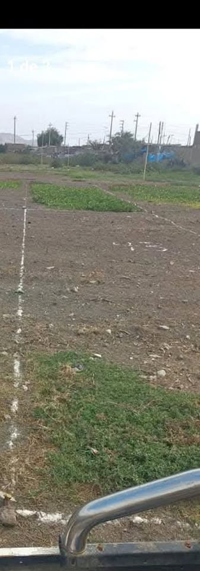

Precio desconocido 120 m²

Se vende 01 lote de terreno su medidas es 6 x 20 mts cada uno con un total de 120mts el lote cuenta con partida electrónica en registros públicos y debidamente inscrito en la municipalidad de Pomalca con título de propiedad ubicación ( a espaldas del servicentro de pomalca sector 27 Mz I lt 43 referente a espaldas del colegio San Vicente de Paul ..casas en construcción...venta a través de notaría ...trato directo ..interesados llamar [hidden information] o vía wathsap